同じ石は、ふたつと出ない。
急がなくていい。気が済むまで、眺めていていい。
掘り手、求む
地の底には、宝石が
柱のように生えている。
掘った石は、当店で買い取ります。
良い石ほど、高く買います。
経験は問いません。
ツルハシは隣の鍛冶場で。
町の買取所
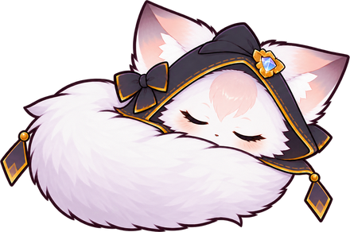
最初に割った結晶から、白い玉が転がり出た。
拾い上げると、割れ目の奥で何かが動いた。
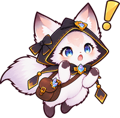
……ふあ。あっ、それ！
アタシの玉だよ。
玉を返すと、狐はぽつりと話しだした。
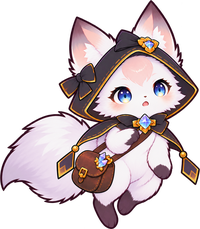
この石の中に、
閉じ込められてたの。……ずっと。
何度起きても出られなくて。
アンタが割らなきゃ、まだ寝てた。
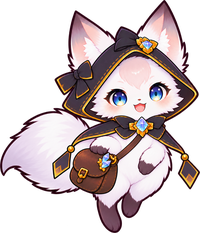
その灯り、貸して。
アンタは両手で掘りな。
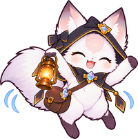
借りは返すよ。
案内してあげる！
キララ
灯りを持ち、出てきた石にいちいち口を出す。
宝石に詳しく、口は少し生意気。
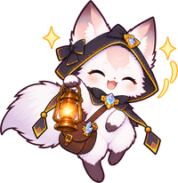
初めての種類が出た時アンタが掘って、アタシが見つけた。
半分ずつの手柄ね。
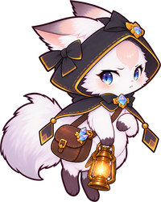
外れた時ハズレかあ。
アンタ、顔に出すぎ。
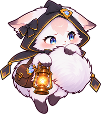
珍しい結晶が出た時アンタ、見直した。
……ちょっとだけね。
ツルハシ一本で、地の底へ。
鉱物の知識はいりません。石のことは、狐のキララが教えます。
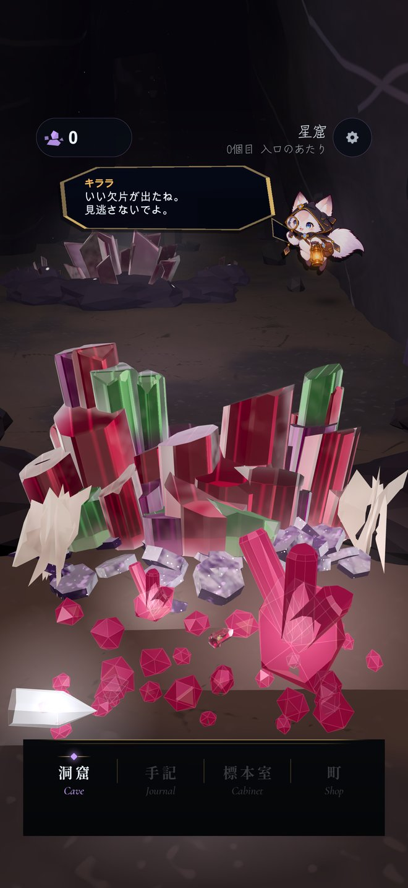
生えている結晶を、指で叩いて割ります。
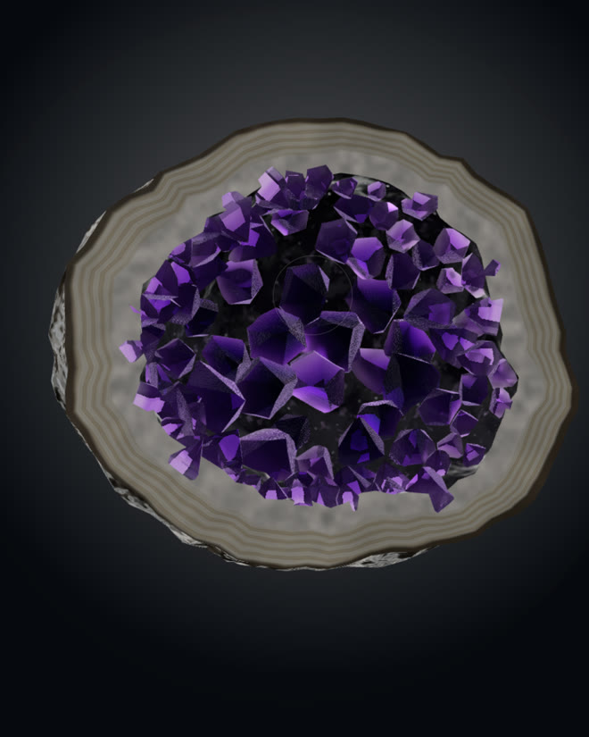
指で回し、ルーペでのぞきます。紫外線で光りだす石も。
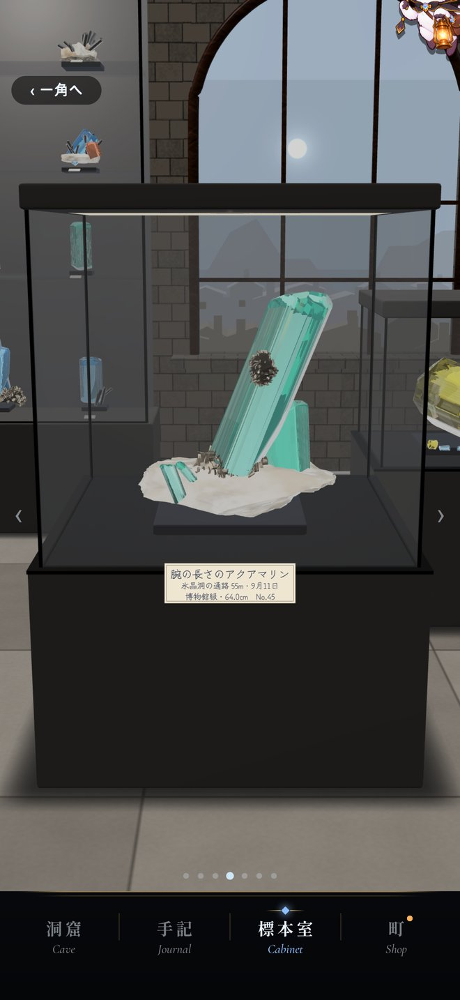
手放すのが惜しい一個は、標本室へ。掘った洞窟と日付が、札に残ります。
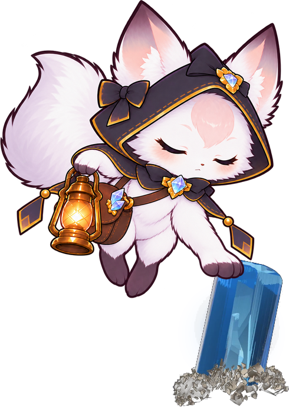
澄んだ一個に、キララが
そっと前足を乗せる。
キララ……っ。今の、なに？
知らない誰かが、頭に入ってきた。
それが誰なのかは、
キララにもまだ分からない。
深く潜るほど、少しずつ。
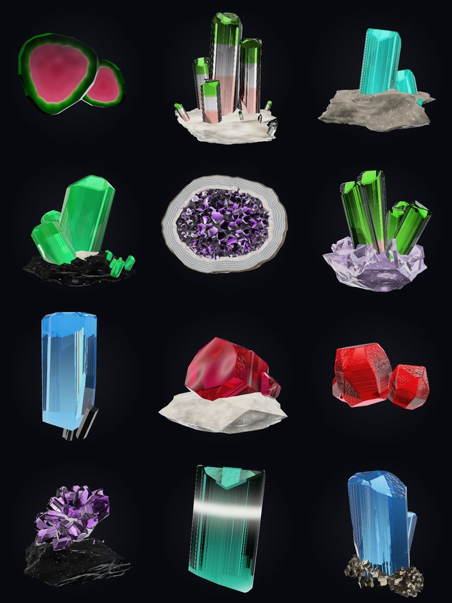
同じ種類でも、形も大きさも質も一個ずつ違います。洞窟は7つあり、深くなるほど景色が変わり、出てくる宝石も変わります。
水晶、アメジスト、アクアマリン、エメラルド、ルビー、トパーズ、フローライト、トルマリン、ペリドット、クンツァイト、ガーネット、オパール、ムーンストーン、アズライト、カルサイト、パイライト、ヘマタイト、ショールなど。
スタミナも、毎日こなす課題もありません。
寝る前に少しだけでも、休みの日にじっくりでも。
キララ待ってるからね。
……ちょっとだけ。
開発中の画面を、少しずつ載せています。
遊んでいる様子は、X の固定ポストの動画で見られます。